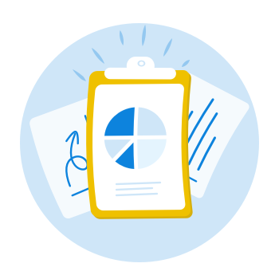

What is the "Plan" stage?
Great research plans will act as a reference guide and help you along with the rest of the steps to help solve for a lack of infomation.
Who's involved:
- UX Designer, Product Manger, any other stakeholders
Timeline:
- 60 - 90 mins.
Step-by-step
1) First, what are you planning to research?
- What do you/your team want to learn from the research?
- What do/don't you know about your customers?
- Who the research is going to benefit. Who are you designing for?
- Which stakeholders/team members should be involved
- The amount of time available for research – how deep/thorough should this be?
2) Next, decide which stakeholders should be part of the process
- Product Managers
- Development Team Leads
- Designers/Researchers
- Product/Business Leads
3) Align on the goals and key objectives for the research
4) Figure out your timelines for the research phase
- When should recruitment start?
- When should our research begin?
- When should the team deliver the high level findings and synthesis?
5) Discuss the background story of the research and/or existing discoveries
6) Specify criteria for your target participants
- I.e. Users who are located in Canada or the U.S.
- Participants that represent your target user group
- Aim for 12-20 participants
7) Propose questions to ask your participants
8) Choose the methodologies that would be most compatible with the goals and questions of the research
Tips:
- Bring in key stakeholders when planning research
- Your project plan will change as things evolve, and that’s perfectly OK. You can always amend things as you go but make sure that you’re really thinking through your project before you start.
- Create a schedule that provides enough time for recruiting, testing, analyzing, and integrating results.
- Meet in a room, not through email. This will allow you to come to a conclusive plan much faster, and get immediate feedback from all parties.